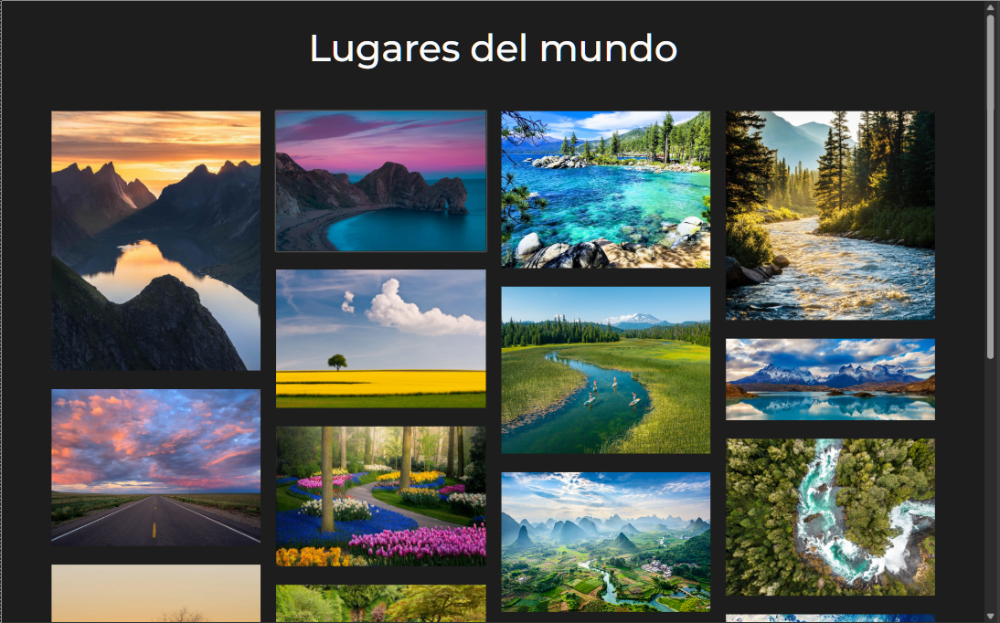
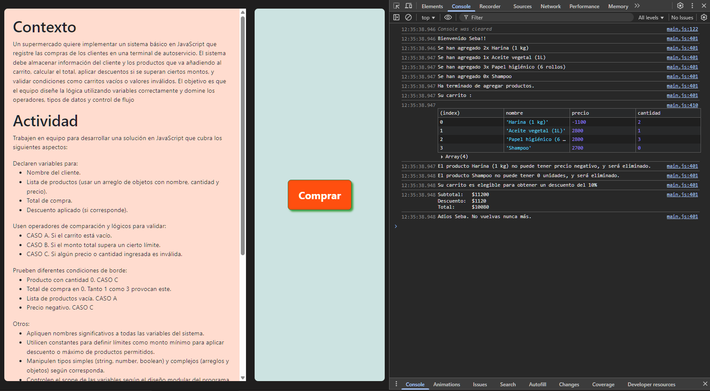

¿Qué hago?

Lugares del mundo
Es una galería minimalista de imágenes que nos llevan a reflexionar en lo hermoso que puede ser nuestro hogar.
Ver en GitHubSecureNet
Website para SecureNet, compañía dedicada a aumentar el valor del recurso humano a través del entrenamiento en seguridad digital.
Ver en GitHub

Carrito de Compras
Un entretenido ejercicio de Javascript que simula a un usuario comprando en un supermercado.
Ver en GitHub ¿8Fold?
¿8Fold?